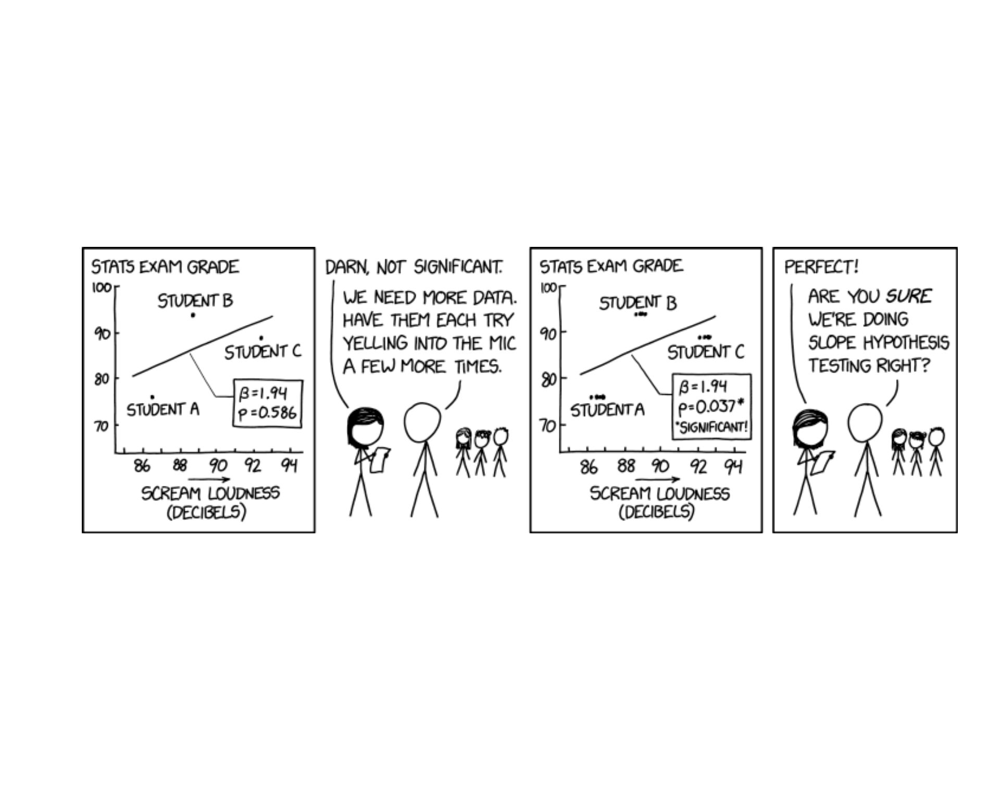
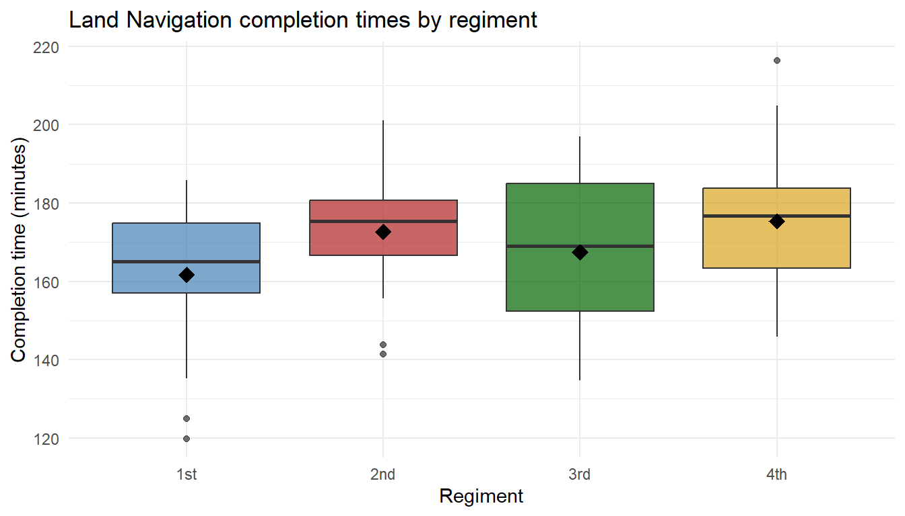
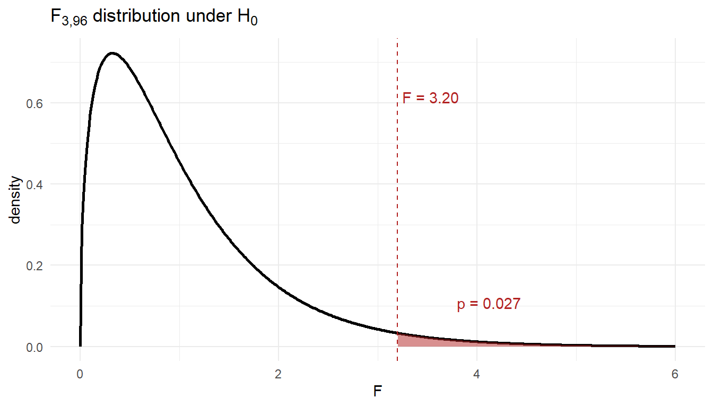
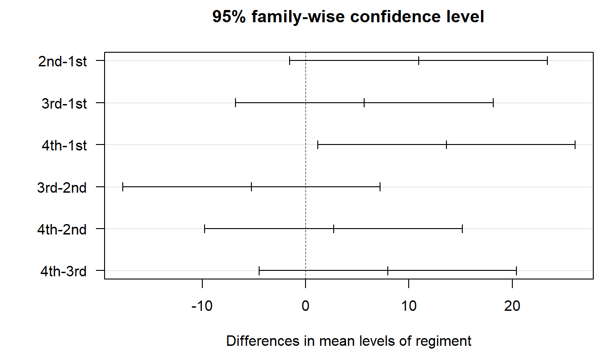

Lesson 37: ANOVA II

Project Day Expectations – Tuesday, 5 May (Lesson 38)
ImportantWhat you must do BEFORE class on 5 May
- Email your non-cadet guest the formal invitation – deadline is today (Thursday).
- CC or BCC
dusty.turner@westpoint.edu. - Include title, classroom (TH339), date, and class hour.
- CC or BCC
- Print every slide in COLOR, one slide per page.
- Tape your slides to the board / wall before class begins.
- Arrive early – have everything posted before guests walk in.
- Order your slides left-to-right so a reader can walk the wall like a poster.
- Stand by your display for the entire hour. Guests circulate; you don’t.
NoteInvitation email template (if you still need to send it)
To: [guest name and email]
CC/BCC: dusty.turner@westpoint.edu
Subj: Invitation -- MA206X Project Presentation: [your title] -- 5 May 2026
Sir / Ma'am,
I'd like to invite you to my MA206X (Probability & Statistics) final project
presentation. My partner CDT [Partner Last Name] and I analyzed real Army Vantage
data from [your assigned brigade]. Our presentation, "[your title]," covers the
brigade readiness question we set out to answer; one-sample, two-sample, and
multiple-regression analyses on individual Soldier records; and recommendations
a brigade commander could act on.
When: Tuesday, 5 May 2026, [class hour, e.g., A hour, 0740--0835]
Where: Thayer Hall, Room TH339
Format: Walk-around / poster style. Every team posts their slides on the
classroom walls; you can stop at any team's display, look at the analysis,
and ask questions. My partner and I will be standing by ours -- come
whenever works, stay as long or short as you'd like.
Please let me know if you can attend.
Very respectfully,
CDT [Last Name], USCC
[Company / Regiment]
[Your USMA email]
NoteTEE Schedule (reminder)
| Section | 12 May 0730–1100 |
13 May 0730–1100 |
15 May 1300–1630 |
|---|---|---|---|
| A2 | 2 | 0 | 15 |
| B2 | 1 | 0 | 17 |
| C2 | 3 | 1 | 12 |
See Lesson 36 for the full section roster by date.
What We Did: Lesson 35 (ANOVA I)
NoteLesson 35: One-Way ANOVA
- Pairwise \(t\)-tests inflate the family-wise false-positive rate (1 - 0.95^6 ≈ 26.5% for 4 groups)
- One-way ANOVA asks one question – “do any group means differ?” – with a single test at level \(\alpha\)
- \(H_0: \mu_1 = \mu_2 = \cdots = \mu_k\) vs. \(H_a:\) at least one differs
- \(F = MSR / MSE\) on \((k-1,\ N-k)\) df; reject when \(F\) is large
- ANOVA tells you that groups differ, not which pairs
What We’re Doing: Lesson 37
Objectives
- Continue one-way ANOVA: assumptions, effect sizes, and reporting
- Use multiple comparisons (Tukey HSD) to identify which group pairs differ while controlling the family-wise error rate
Required Reading
Devore, Section 10.2 (focus on multiple comparisons)
The Takeaway for Today
ImportantToday’s Key Ideas
- One-way ANOVA answers “do any group means differ?” – but it does not say which.
- Running all \(\binom{k}{2}\) pairwise \(t\)-tests inflates the family-wise false-positive rate.
- Tukey’s HSD tests every pair while holding the family-wise error rate at \(\alpha\).
- Read Tukey output as CIs – if the CI excludes 0, that pair differs.
One-Way ANOVA Refresher
Today’s scenario: a brigade S-3 wants to know whether Land Navigation completion times (minutes) differ across the four cadet regiments (1st, 2nd, 3rd, 4th). We have 25 cadets sampled from each.
- \(H_0:\ \mu_1 = \mu_2 = \mu_3 = \mu_4\)
- \(H_a:\) at least one regiment mean differs
- Test statistic: \(F = MSR / MSE\) on \((k - 1,\ N - k)\) df
The Two Pieces: Signal and Noise
ANOVA is a signal-to-noise ratio. The two pieces:
ImportantMSR – Mean Square Regression (between-group, the signal)
How far apart are the group means from the grand mean? When the groups really differ, this is large.
\[ SSR = \sum_{i=1}^{k} n_i (\bar{x}_i - \bar{x})^2 \qquad MSR = \frac{SSR}{k - 1} \]
This is the betweenness – it captures variation between the groups.
ImportantMSE – Mean Square Error (within-group, the noise)
How spread out is the data within each group, around its own group mean? This is the background noise that’s there even if the groups are identical.
\[ SSE = \sum_{i=1}^{k} \sum_{j=1}^{n_i} (x_{ij} - \bar{x}_i)^2 \qquad MSE = \frac{SSE}{N - k} \]
This is the withinness – it captures variation within each group.
The Ratio
\[ F = \frac{MSR}{MSE} = \frac{\text{between-group variability}}{\text{within-group variability}} = \frac{\text{signal}}{\text{noise}} \]
- \(F\) near 1 → between-group spread looks like ordinary noise → consistent with \(H_0\)
- \(F\) much larger than 1 → between-group spread is bigger than noise can explain → reject \(H_0\)

Computing F by Hand
Before we let R do it, let’s build the F statistic ourselves from the four regiment means. With \(n_i = 25\), \(N = 100\), \(k = 4\):
Step 1 – group means and grand mean. From the data,
| Regiment | \(\bar{x}_i\) |
|---|---|
| 1st | 161.72 |
| 2nd | 172.65 |
| 3rd | 167.40 |
| 4th | 175.36 |
Grand mean: \(\bar{x} = 169.28\).
Step 2 – SSR (between groups, the signal).
\[ \begin{aligned} SSR &= \sum_{i=1}^{4} n_i (\bar{x}_i - \bar{x})^2 \\ &= 25\,[(161.72 - 169.28)^2 + (172.65 - 169.28)^2 + (167.40 - 169.28)^2 + (175.36 - 169.28)^2] \\ &= 25\,[57.20 + 11.37 + 3.53 + 36.97] \\ &\approx 2725.3 \end{aligned} \]
On \(k - 1 = 3\) df, \(MSR = 2725.3 / 3 \approx 908.4\).
Step 3 – SSE (within groups, the noise).
\[ SSE = \sum_{i=1}^{4} \sum_{j=1}^{n_i} (x_{ij} - \bar{x}_i)^2 \approx 27{,}286.5 \]
On \(N - k = 96\) df, \(MSE = 27{,}286.5 / 96 \approx 284.2\).
Step 4 – assemble F.
\[ F = \frac{MSR}{MSE} = \frac{908.4}{284.2} \approx 3.20 \quad\text{on }(3,\,96)\text{ df.} \]
The p-value is the area to the right of \(F = 3.20\) under the \(F_{3,\,96}\) density:

So \(p \approx 0.027\). Under \(H_0\) (all regiment means equal), an F this extreme or worse happens about 2.7% of the time – small enough to reject at \(\alpha = 0.05\), but only barely.
Confirm with R
Now let R do the same calculation:
fit_aov <- aov(time ~ regiment, data = landnav)
summary(fit_aov) Df Sum Sq Mean Sq F value Pr(>F)
regiment 3 2725 908.4 3.196 0.0269 *
Residuals 96 27286 284.2
---
Signif. codes: 0 '***' 0.001 '**' 0.01 '*' 0.05 '.' 0.1 ' ' 1Same \(F_{3,\,96} \approx 3.20\), same \(p \approx 0.027\). We reject \(H_0\): at least one regiment’s mean Land Nav time differs from the others.
But that’s all ANOVA tells us. We still don’t know which regiments differ – if any specific pair actually does. Rejecting \(H_0\) only says “somewhere in there, at least one mean is different.” The pair could be 1st vs. 4th, or 3rd vs. 2nd, or some other combination – ANOVA is silent on that.
That’s the gap we close today, with Tukey’s HSD.
Tukey’s HSD: Which Pairs Actually Differ?
Tukey’s HSD (Honestly Significant Difference) compares every pair of group means while holding the family-wise error rate at \(\alpha\).
The procedure:
- Run ANOVA. (You should reject \(H_0\) first – otherwise there’s nothing to dissect.)
- For each pair \((i, j)\), compute the difference \(\bar{x}_i - \bar{x}_j\) and a CI based on the studentized range distribution and \(MSE\) from the ANOVA.
- Any pair whose CI excludes 0 is significantly different at the family-wise \(\alpha\) level.
The family-wise \((1-\alpha)\) confidence interval for \(\mu_i - \mu_j\) is
\[ (\bar{x}_i - \bar{x}_j) \;\pm\; \frac{q_{\alpha,\, k,\, N-k}}{\sqrt{2}} \,\sqrt{MSE\left(\frac{1}{n_i} + \frac{1}{n_j}\right)} \]
where \(q_{\alpha, k, N-k}\) is the upper-\(\alpha\) critical value of the studentized range distribution with \(k\) groups and \(N-k\) residual degrees of freedom, and \(MSE\) is taken from the ANOVA table. (The \(\sqrt{2}\) converts the studentized range into a margin on a single difference.)
In R, TukeyHSD() takes the fitted aov object:
TukeyHSD(fit_aov) Tukey multiple comparisons of means
95% family-wise confidence level
Fit: aov(formula = time ~ regiment, data = landnav)
$regiment
diff lwr upr p adj
2nd-1st 10.934419 -1.533367 23.402205 0.1068156
3rd-1st 5.680381 -6.787405 18.148167 0.6338551
4th-1st 13.637740 1.169954 26.105526 0.0262837
3rd-2nd -5.254038 -17.721824 7.213748 0.6892838
4th-2nd 2.703321 -9.764465 15.171107 0.9416500
4th-3rd 7.957359 -4.510427 20.425145 0.3458277For each pair you get:
diff– sample mean difference \(\bar{x}_i - \bar{x}_j\)lwr,upr– family-wise 95% CI for the true differencep adj– Tukey-adjusted p-value
TipHow to read it
- If the CI excludes 0 (equivalently,
p adj < 0.05), the pair is significantly different. - If the CI includes 0, the data don’t separate that pair.
Visualizing Tukey’s HSD

Any interval crossing the dashed zero line is not a significant pair. Intervals fully to one side of zero are.
Reporting It
After Tukey’s HSD, write the result like this:
A one-way ANOVA found a significant difference in mean Land Nav completion time across the four regiments (\(F_{3, 96} \approx 19\), \(p < 0.001\)). Tukey’s HSD identified four significantly different pairs at the family-wise 5% level: 2nd vs. 1st, 4th vs. 1st, 3rd vs. 2nd, and 4th vs. 3rd. Operationally, 3rd Regiment was the fastest and 4th Regiment was the slowest; the gap between them is roughly 24 minutes (95% family-wise CI excludes 0). The 3rd-vs-1st and 4th-vs-2nd pairs were not significantly different.
Board Problems
Problem 1: Tukey HSD Output
TukeyHSD() for a one-way ANOVA on three platoons returns:
diff lwr upr p adj
B - A 4.20 -1.10 9.50 0.146
C - A 9.80 4.50 15.10 0.001
C - B 5.60 0.30 10.90 0.038
NoteQuestions
- Which pairs differ at the family-wise 5% level?
- Construct the “underline” or “letter” summary: which means group together?
TipAnswers
C vs. A (\(p = 0.001\)) and C vs. B (\(p = 0.038\)). B vs. A does not.
Letters: A and B share a group; C is its own group. \[ \underline{\bar{x}_A \quad \bar{x}_B} \qquad \bar{x}_C \]
Before You Leave
Today
- One-way ANOVA tells you that at least one mean differs – not which.
- Tukey’s HSD compares every pair while holding family-wise error at \(\alpha\).
- Read the output as CIs: any interval excluding 0 is a significantly different pair.
Any questions?
Next Lesson
Lesson 38: Project Presentations
- Tuesday, 5 May 2026 – walk-around presentations
- Slides printed in color and taped to the board before class begins
- Non-cadet guest invited (with me CC/BCC’d)
- Stand by your display; guests circulate
Upcoming Graded Events
- Project Presentation – 5 May 2026 (Lesson 38)
- Tech Report (final) – see Canvas
- TEE – 12, 13, 15 May 2026 (per section schedule)